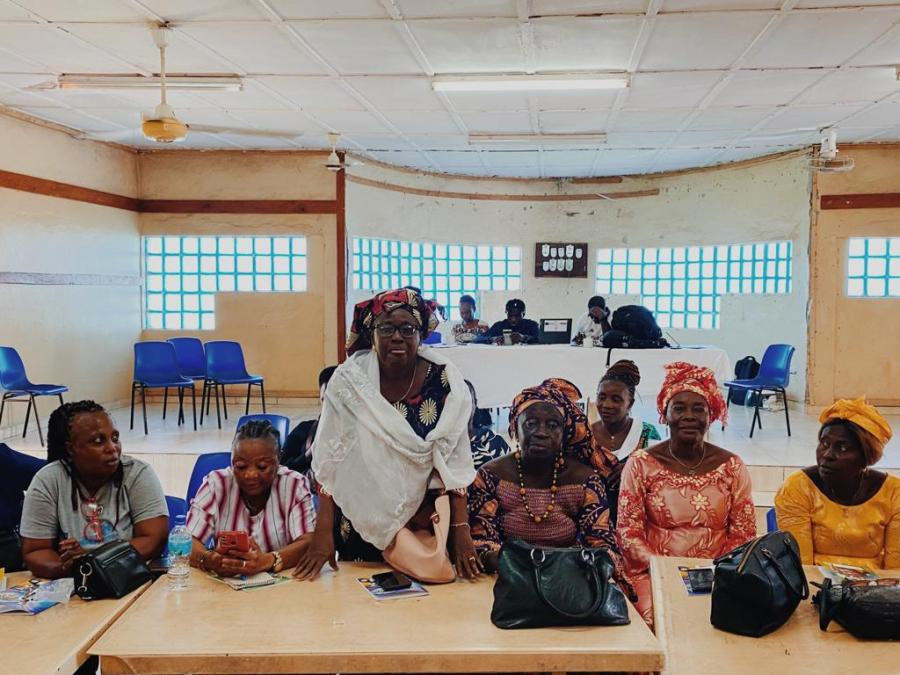
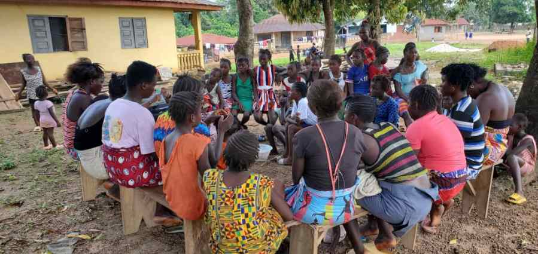
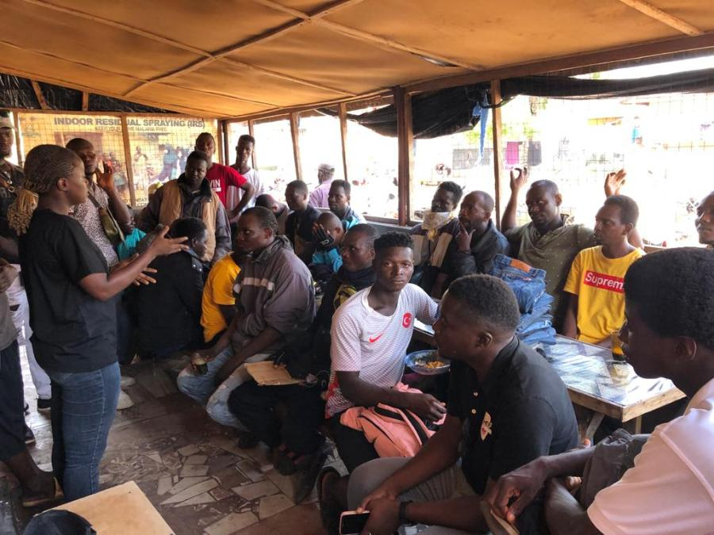
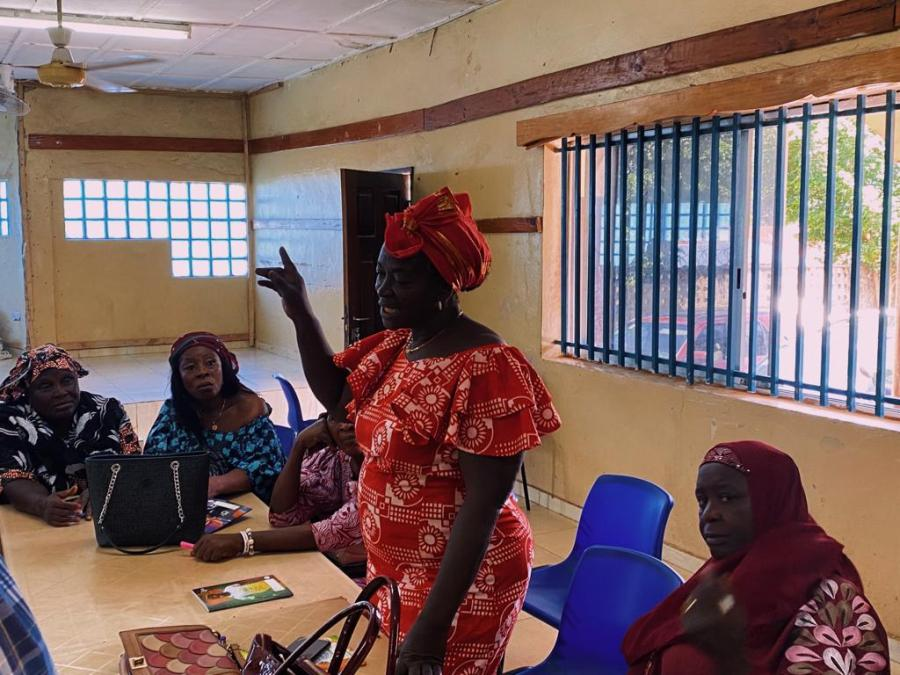
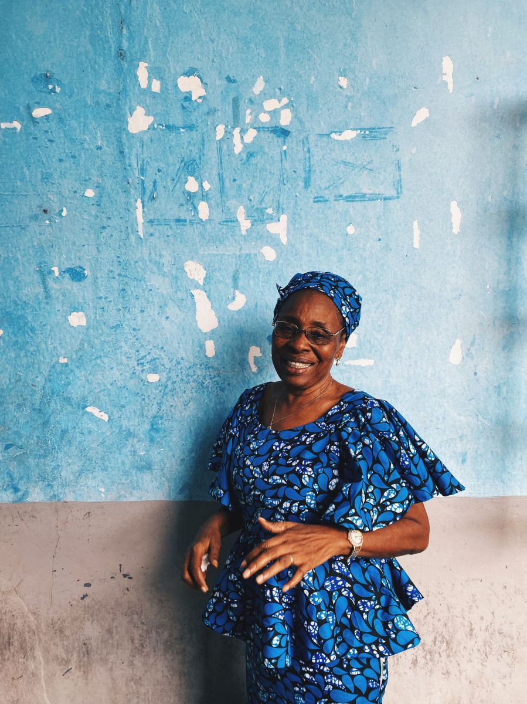
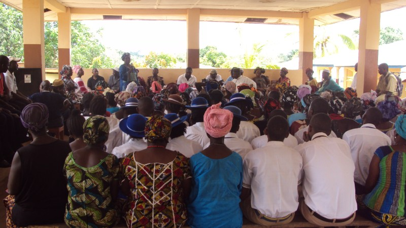

Our programs
From Bombali safe spaces to nationwide peacebuilding — work that puts women and girls at the centre.

Irish Aid
ICSP Women's Empowerment
Leadership, advocacy and the Bombali District Women Leadership Network.

Purposeful
Girls Circle Collective
90 clubs, 25 girls each, 8 chiefdoms in Bombali.

Trócaire
People to People
Youth and women as peacebuilders; VSLAs and social cohesion.

EU & Trócaire
Gender Equality & Social Accountability
Town halls, CoPs and young women in governance networks.

Six districts
Conflict Mitigation
Peace ambassadors from Freetown to Pujehun.

Archive
Land rights, education & Ebola response
Earlier ActionAid, VSO and community programmes.